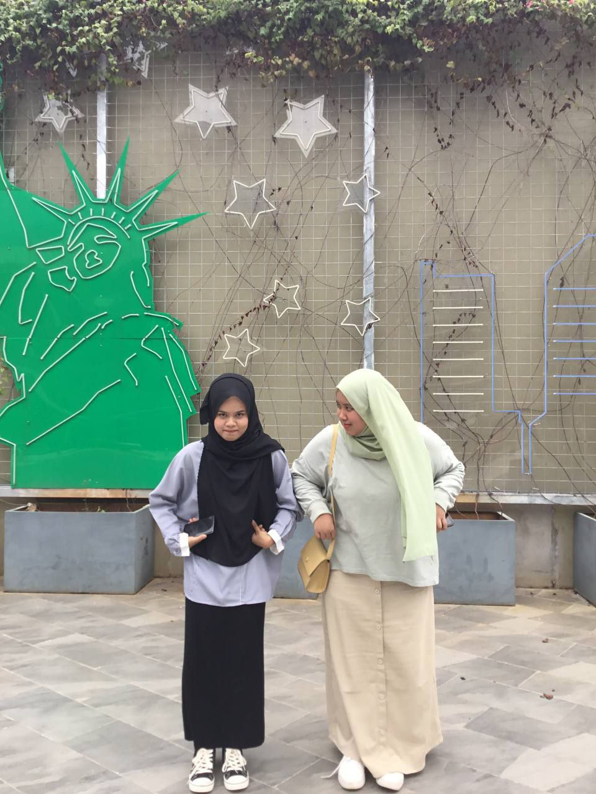
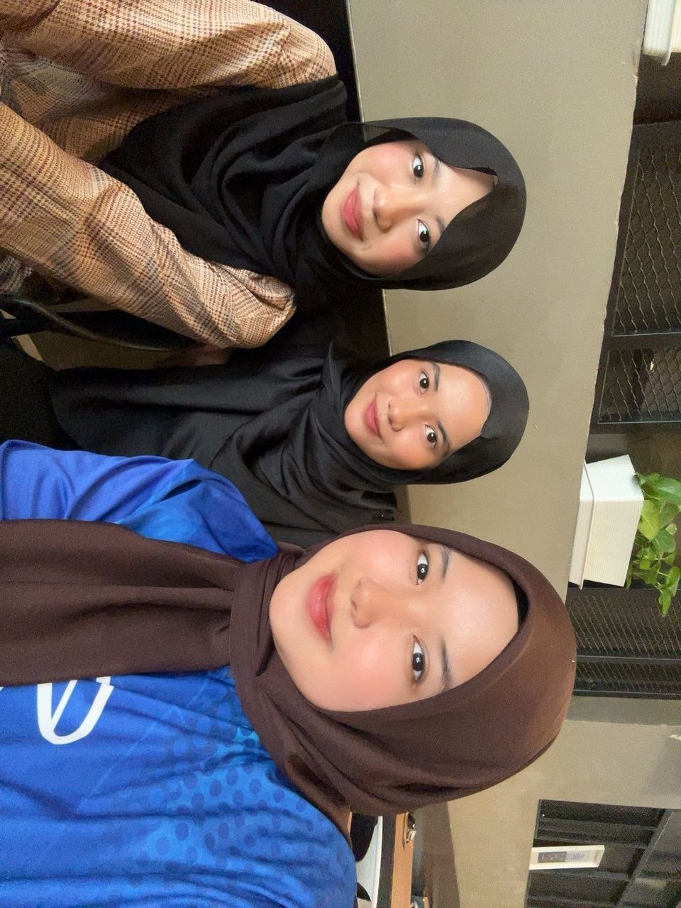
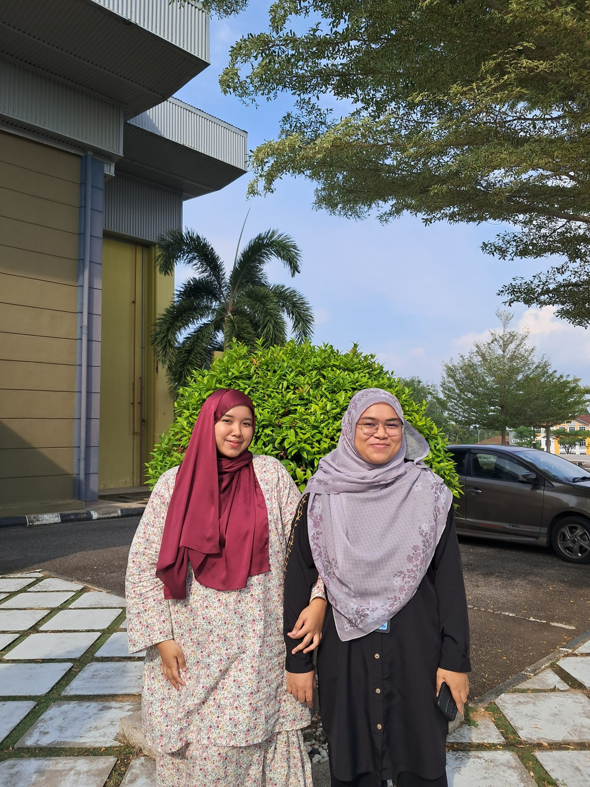

My Friends
A good friends is like a four-leaf clover; hard to find and lucky to have.
My Bestfriend
Back to primary school, I have friend that are really close to me. However, after both of us separate during high school, we already lost contact and did not close anymore. So, in 2020, there was a girl name Sharifah which are new student in my class. At first, we did not talk much to each other since she was an introvert person compared to me, however in 2021 during Covid-19 pandemic, we are getting closer and keep chatting through WhatsApp everyday without missed. That is the starting of our friendship. We are staying as a classmate until we finish our high school. Until now, we still keep in touch by chatting, sending Tiktok videos and random IG reels. That is how we maintained our friendship even did not seeing each other everyday like we used to. During my semester breaks, we will always plan to meet up and have fun at mall nearby like IOI and Alamanda Shopping Mall to keep on updating or sharing each other problems. I'm glad to be her friend and love her so much because she is a good friend to me. She always give me motivation if I am sad, she always laugh at my jokes and she always care if I am sick.

Me and my bestie 💗
My Closed Friends
To be honest, I have a lot of closed friends that I enjoy to spend time together. Let's start with my high school friends. Damia, Ash and Qis are some of my closed friends from high school that still contact with me. Like Sharifah, I also always went out with them during our semester break.

Damia & Ash; My high school closed friends that I always spend time with
Next, my current closed friends are my girl classmates which are girls from KCDIM144-E. Honestly, they are one of the reasons why I am still studying in UiTM right now. I believe without them, I would be lonely, sad, low-confident and homesick. With them by my side, I am always happy and laugh to their jokes everyday. They are supportive, funny, motivated and helpful friends. I hope that I can keep in touch with them till older.

My favourite girls in UiTM

My first friend in UiTM

My helpful and loyal group assignment members
Me and Farah(one of my classmate) love to make TikTok trends together
Best viewed in Chrome, 1920x1080 resolution. Last updated: May 2026.